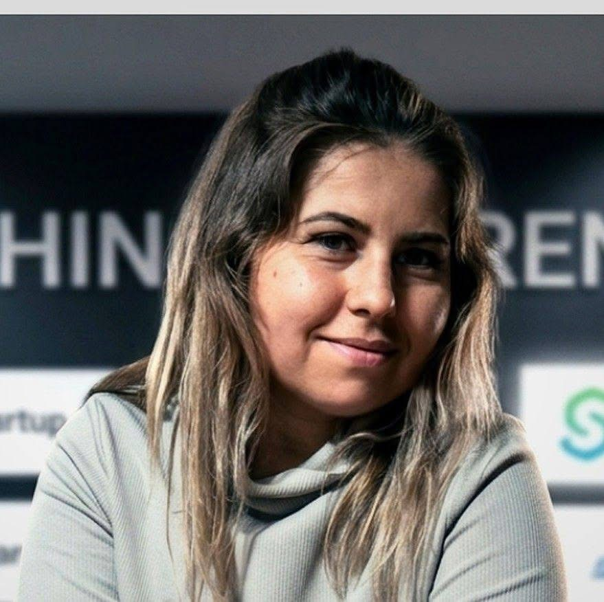

Sunt Otilia Sălășan, formator certificat — cu scor 10/10 la examenul de certificare — și consultant în fonduri europene din Țara Hațegului.
Sunt un om kinestezic: învăț făcând, greșind, ajustând. Nu din teorie abstractă, ci din acțiune repetată, până când claritatea apare singură. Motto-ul meu, „Învăț în fiecare zi", nu e o frază frumoasă — e felul în care lucrez, inclusiv cu oamenii pe care îi ghidez.
De aici vine și numele Katharsis: purificare prin transformare. Momentul în care un antreprenor încetează să mai fie „pompierul" propriei afaceri — cel care aleargă de dimineață până seara stingând incendii, facturi, urgențe, clienți nemulțumiți — și devine „arhitectul" ei: cel care construiește sisteme, nu doar reacționează.
Ca și consultant în fonduri europene, am văzut de aproape ce înseamnă o afacere pusă pe structură — și ce lipsește, de obicei, atunci când o afacere se ține doar pe efortul unei singure persoane.
„Sistemul rulează, nu tu arzi."
